Week 9 : One Way Analysis of Variance (ANOVA)
This week we will explore how to run ANOVA analyses to compare means between two or more groups. This is an important analysis as many experimental and scientific contexts cannot be simiplified down to two groups for a t-test, and running many t-tests would increase our chances of false positive findings..
| Quantitative Methods | |
|---|---|
| One-Way ANOVA | |
| Log transforms | |
| Assumptions of ANOVA | |
| Estimated Marginal Means |
| Data Skills | |
|---|---|
| Run and explore ANOVA analyses in Jamovi | |
| Compute data transformations using Jamovi |
| Open Science | |
|---|---|
| Work with a published dataset |
This is the same dataset that we used in week 7.
This tutorial refers to a video in which participants watched unpleasant events to simulate a traumatic experience in the lab. The content of this video is not disclosed or dicussed in any more detail than this during this tutorial - those who are interested can find more information in methods section the published article. This tutorial does explore the emotional impact that the video has on participants.
1. The Dataset
Flashbacks and intrusive thoughts are a core features of post-traumatic stress disorder (PTSD). These can be highly distressing and disruptive for the person suffering from them and there are few early interventions that are known to help.
One unexpected and intriguing proposal in the last few decades suggests that carrying out very engaging visuo-spatial tasks with a neutral emotion in the immediate aftermath of a traumatic event may help reduce later flashbacks (Holmes et al. 2009). This is thought to be due to intense visuo-spatial processing disrupting the formations of the flashback memories, which are themselves flashbacks.
This week, we’re going to look at the dataset from one experiment attempting a replication and extension of this effect (James et al. 2015). The abstract of the paper is below
Memory of a traumatic event becomes consolidated within hours. Intrusive memories can then flash back repeatedly into the mind’s eye and cause distress. We investigated whether reconsolidation—the process during which memories become malleable when recalled—can be blocked using a cognitive task and whether such an approach can reduce these unbidden intrusions. We predicted that reconsolidation of a reactivated visual memory of experimental trauma could be disrupted by engaging in a visuospatial task that would compete for visual working memory resources. We showed that intrusive memories were virtually abolished by playing the computer game Tetris following a memory-reactivation task 24 hr after initial exposure to experimental trauma. Furthermore, both memory reactivation and playing Tetris were required to reduce subsequent intrusions (Experiment 2), consistent with reconsolidation-update mechanisms. A simple, noninvasive cognitive-task procedure administered after emotional memory has already consolidated (i.e., > 24 hours after exposure to experimental trauma) may prevent the recurrence of intrusive memories of those emotional events
This experiment shows participants a 12-minute distressing film to simulate a traumatic event. Participants completed three sessions in the experiment day 0, day 1 and day 7. They also kept a diary recording their thoughts and memories about the film throughout the week. Participants viewed the film on day 0 and completed a range of experimental tasks on days 1 and 7.
Crucially, participants were allocated to one of four conditions in the time immediately following the video. One group played tetris as a distraction, a second group completed a reactivation task which was throught to help reduce the emotional response to the video, a third group did both tetris and reconsolidation and a fourth group was a no-task control group.
2. The Challenge
This week - we will explore two of the four conditions to test the following hypothesis:
Engaging in computer game and reactivation tasks after a trumatic event will reduce number of subsequent intrusive memories
This is similar to the hypothesis from week 7, but now we have allowed for several conditions in the experiment rather than just two.
If we find evidence for a difference in our omnibus ANOVA test we can explore post-hoc comparisons to describe the exact difference that is present.
Open Jamovi and load in this weeks data file before going any further.
3. Analysis of Variance in Jamovi
At this point - you can probably figure out how to run the basics of an ANOVA analysis in Jamovi. There are a lot of similarities with the t-test analyses we have run.
To run the ANOVA, open the ANOVA -> ANOVA menu from the top ribbon.
Make sure you open the ‘ANOVA’ menu not the ‘One-way ANOVA’ menu. We will run a One-way ANOVA but will use the full ANOVA menu as it contains the full set of features and analyses that we will need. The One-way ANOVA menu is a streamlined option for very simple analyses.
Once you have the menu open, click Days_One_to_Seven_Image_Based_Intrusions_in_Intrusion_Diary across to the Dependent Variable box and Condition across to the ‘Fixed Factors’. The first ANOVA results table will appear in the results.
Very simple! but remember that it takes some additional work to check over and interpret the results from an ANOVA.
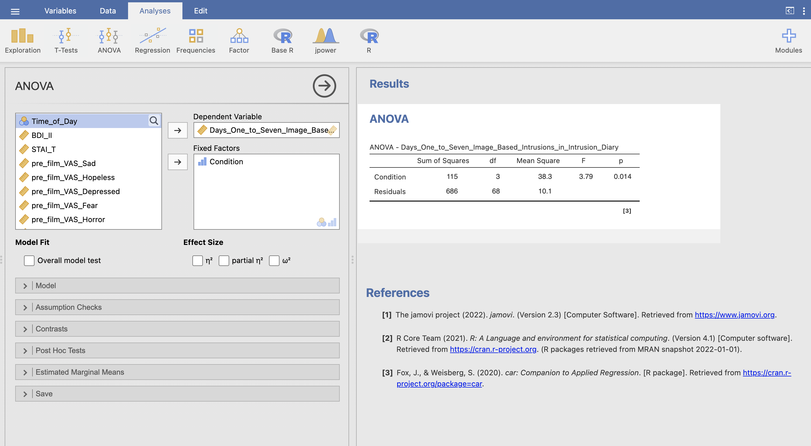
Let’s understand the results table in detail. First let’s quickly review the theory:
In an ANOVA analysis we’re comparing the sum-of-squared error between two different models - one model has all groups with the same mean and the second model gives each group its individual mean. From this we can compute three different sets of sum-sqaures.
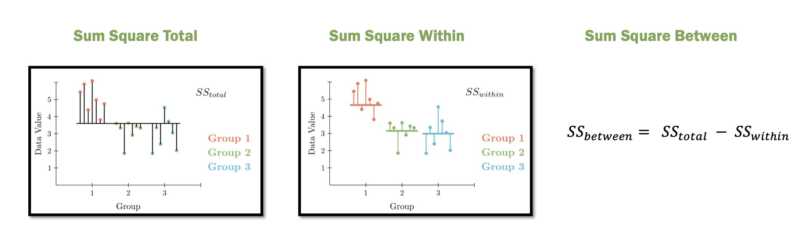
- Sum-Square Error Total - the overall variability assuming that all groups have the same mean
- Sum-Square Error Within - the variability assuming that each group has its own mean
- Sum-Square Error Between - the change variability attributable to giving each group its own mean
The rationale is that if the groups have distinct means then Sum-Square Within will be much smaller than Sum-Square Total. This difference is quantified with Sum-Square Between.
These values are listed in the ANOVA table. The ‘Sum of Squares’ for Condition is the Sum-Square Between and the ‘Sum of Squares’ for Residuals is Sum-Square Within. (This terminology can get a little complex…).
Use the ANOVA table to complete this statement reporting the results of the ANOVA. Fill in the spaces provided.
The Sum-Square Error Between is and the Sum-Square Error Within is .
The ANOVA table from above…
The next step is to compute the Mean-Squares. We need this additional step as the Sum-Squares will are senstive to the sample size and number of groups - we have to make a correction for this. The Mean-Squares are computed with two fractions.
\[ \text{Mean-Square Error Within} = \frac{\text{Sum-Square Error Within}}{\text{Number of Participants} - \text{Number of Groups}} \]
\[ \text{Mean-Square Error Between} = \frac{\text{Sum-Square Error Between}}{\text{Number of Groups} - 1} \]
The ingredients for these fractions are already in our ANOVA table. The top of the fraction is the Sum of Squares we’ve seen earlier. The values on the bottom of the fraction are actually precomputed for us as the Degrees of Freedom.
The degrees of freedom for Condition (df between) is \(\text{Number of Groups} - 1\). In our case we have four groups so the value is 3. The degrees of freedom for Residuals (df within) is \(\text{Number of Participants} - \text{Number of Groups}\). We have 72 participants and 4 groups so the value is 68.
So, working across the ANOVA table in rows - we can see that the value of the Mean-Square Errors in third column is simply the first column divided by the second.
Use the ANOVA table to complete this statement reporting the results of the ANOVA. Fill in the spaces provided.
The Mean-Square Error Between is:
\(\frac{\text{Sum-Square Error Between}}{\text{Number of Groups} - 1}\) = \(\frac{\text{Sum-Square Error Between}}{\text{df between}}\) = \(\frac{115}{3}\) =
The Mean-Square Error Within is:
\(\frac{\text{Sum-Square Error Within}}{\text{Number of Participants} - \text{Number of Groups}}\) = \(\frac{\text{Sum-Square Error Between}}{\text{df within}}\) = \(\frac{686}{68}\) =
The ANOVA table from above…
We now have the ingredients for our ANOVA! The F-statistics for the ANOVA is
\[ \text{F} = \frac{\text{Mean-Square Error Between}}{\text{Mean-Square Error Within}} \]
This is the ratio of our two Mean-Square fractions from above.
Use the ANOVA table to complete this statement reporting the results of the ANOVA. Fill in the spaces provided.
The F statistic is:
\(\frac{\text{Mean-Square Error Between}}{\text{Mean-Square Error Within}}\) = \(\frac{38.3}{10.1}\) =
The ANOVA table from above…
There are a lot of values in the ANOVA table but the relationship between them is straightforward when you know the logic behind it.
To report a one-way ANOVA to APA format you can follow this broad template.
A one-way ANOVA was conducted to compare the effect of [independent variable] on [dependent variable]. There was a statistically significant difference in [dependent variable] between groups, F([df between], [df within]) = [F value], p = [p value].
Use the ANOVA table to complete this statement reporting the results of the ANOVA. Fill in the spaces provided.
A one-way ANOVA was conducted to compare the effect of the on the . There was difference in between groups, F(, ) = , p = .
The ANOVA table from above…
Open a new ANOVA analysis and run a one-way ANOVA to test the control condition asking whether there was a difference between groups in intrusive memories in the time before the experiment started.
The variable Days_Zero_Image_Based_Intrusions_in_Intrusion_Diary
Use the ANOVA table from your new control analysis. Fill in the spaces provided.
A one-way ANOVA was conducted to compare the effect of on . There was difference in the between groups, F(, ) = , p = .
The ANOVA table from the control analysis.
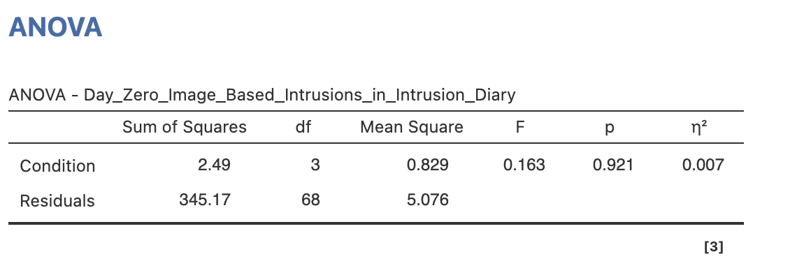
4. Effect size for ANOVA
There are several possible effect sizes we can use for ANOVA analyses. We will use \(\eta^2\) (pronouced eta-squared) for one-way ANOVA. The Learning Statistics with Jamovi textbook has a nice summary of how to interpret \(\eta^2\).
The interpretation of \(\eta^2\) is equally straightforward. It refers to the proportion of the variability in the outcome variable that can be explained in terms of the predictor. A value of 0 means that there is no relationship at all between the two, whereas a value of 1 means that the relationship is perfect. Better yet, the value is very closely related to \(R^2\) and has an equivalent interpretation
- Slightly abridged quote from Learning Statistics with Jamovi
Very straightforward indeed, we can think of \(\eta^2\) as an \(R^2\) for the ANOVA. It is also straightforward to compute - just check the box under ‘Effect Sizes’.
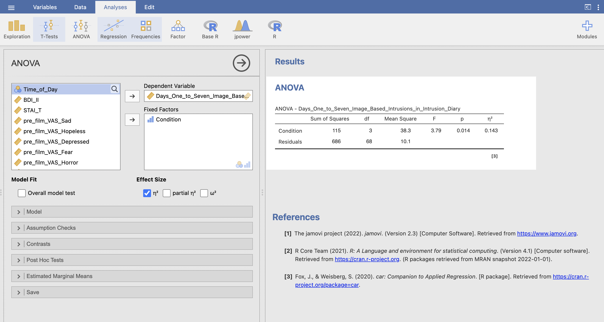
There are two other options for ANOVA effect sizes:
- partial \(\eta^2\) will be useful for more complex ANOVA designs you will work with in other modules.
- \(\omega^2\) is an unbiased estimator that could be used in place of \(\eta^2\). Some sources recommend that we use \(\omega^2\) rather than \(\eta^2\) (Albers and Lakens 2018). You could use either and might encounter either in the literature.
5. Post-hoc Tests
An ANOVA analysis returns a significant effect that indicates that there is a difference between the group means but doesn’t tell us anything about which groups are actually different.
If, and only if, the overall ANOVA returns a significant result - we can use post-hoc tests to explore what the specific differences actually are. This is a critical step for the interpretation of our results.
In the example above we saw that the experimental task that participants complete after watching the film does change the mean number of intrusive memories that the participants experience. The ANOVA table doesn’t say more than this - as far as we know from this analysis it is possible that playing Tetris may have increased or decreased the number of intrusive memories.
Post-hoc tests are the answer for this - and post hoc tests are based on ‘Estimated Marginal Means’. These sound more complex than they are. Estimated marginal means are adjusted means (and associated standard errors etc) that account for the assumptions of a statistical model and for the effects of any other variables in a model.
So, for an ANOVA the estimated means are adjusted for the assumption of homogeneity of variance - that each group has the same variance. We do not have any other variables to adjust for in this analysis but this is relevant for future Analysis of Co-Variance (ANCOVA) models that you may encounter in future modules.
Find the ‘Estimated Marginal Means’ drop down menu and add ‘Condition’ to the Terms box to compute the estimated marginal mean for each group within Condition. Make sure to include the plots and tables in the ouputs (though the x axis labels for this particular plot aren’t very good…).
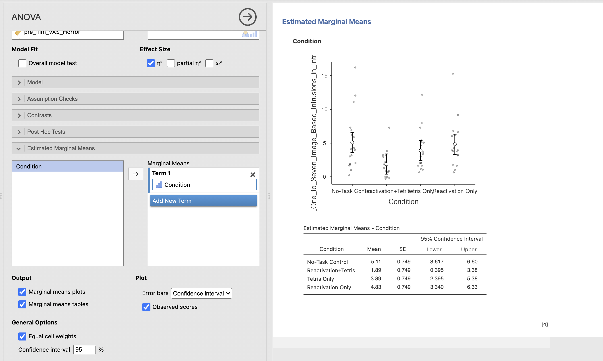
The table gives us our four marginal means summarising the mean of each group alongside a 95% confidence interval for that estimate and the Standard Error for each mean.
The chart gives us a more human readable summary of the means with the associated confidence intervals.
So, lets run our post-hoc tests!
Find the ‘Post-Hoc Tests’ drop down menu and add ‘Condition’ to the right hand box to compute the post hoc comparison between each pair of groups within Condition.
Make sure to include ‘Tukey’ correction and add the Cohen’s d effect size.
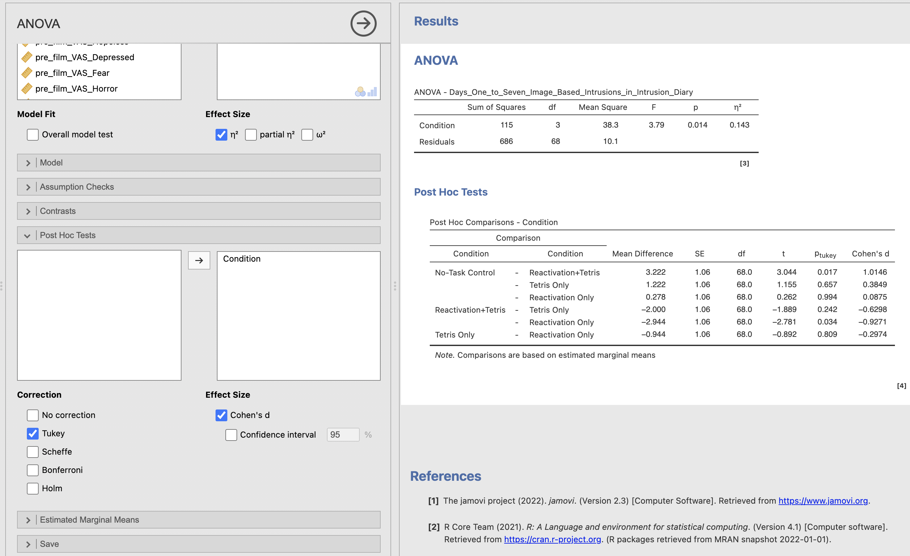
The Comparison columns lists the six pairwise comparisons that can be assembled from our four conditions. As before, the standard errors (SE column) are the same for all of the comparisons. Remember that these results are based on the estimated marginal means rather than the standard means we would use outside an ANOVA.
6. Checking assumptions
As ever - the ANOVA makes certain assumptions about the data so that we can perform our statistics. These assumptions are similar to what we saw with t-tests and should all be in place for our ANOVA results to make a valid generalisation to the wide population.
Match the ANOVA assumption to its definition.
| Assumption | Definition |
|---|---|
| Independence | |
| Normal distributions | |
| Homogeneity of variance | |
| Categorical factors | |
| Data type |
Take a look at your lecture notes from week 8!
It is very straighforward to check these assumptions in Jamovi - find the ‘Assumption Checks’ menu and select all three options to run the Shapiro-Wilk test, Levene’s Test and the QQ plot.
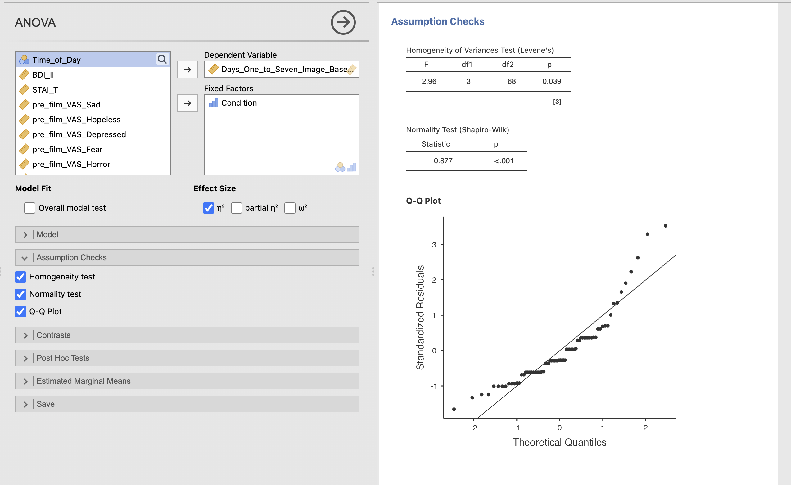
7. ANOVA on log transformed data
Looks like our data do not meet the parametric assumptions of a standard ANOVA analysis. Its often a good idea to check assumptions early in the data analysis process…
There are non-parametric ANOVA analyses available - you could now run the Kruskall Wallis test on the data to perform a non parametric one way ANOVA.
Let’s try a data transformation here though, the full parametric ANOVA is very flexible so it would be good to use it if we can.
Compute a new data variable using the log transform on the Days_One_to_Seven_Image_Based_Intrusions_in_Intrusion_Diary - review week 7 section 7 if you need reminder on how to do this.
Use the results to complete this reporting of the ANOVA results.
A Shaprio-Wilk test showed a significant departure from a normal distribution, W=0.877, p<0.001. The data were transformed using a log transform.
A second Shaprio-Wilk test showed that the log-transformed data is , W=, p=. Levene’s test on the transformed data shows that homogeneity of variance across the groups, F(, ) = , p=
A one-way ANOVA was conducted to on the transformed data to compare the effect of the on the . There was difference in between groups, F(, ) = , p = , \(\eta^2\) = .
Post hoc comparisons with Tukey correction were conducted to identify which pairs of conditions showed significant differences in their estimated marginal means. Three pairwise comparisons showed a significant difference. Note that we are reporting the log-transformed means with the post-hoc test, not the original means.
The ‘No-Task Control’ group (M=) had more instrusive memories than the ‘Reactivation+Tetris’ group (M=), t() = , p=, Cohen’s d=
The ‘Reactivation+Tetris’ group (M=) had fewer instrusive memories than the ‘Tetris Only’ group (M=), t() = , p=, Cohen’s d=.
The ‘Reactivation+Tetris’ group (M=) had fewer instrusive memories than the ‘Reactivation Only’ group (M=), t() = , p=, Cohen’s d=.
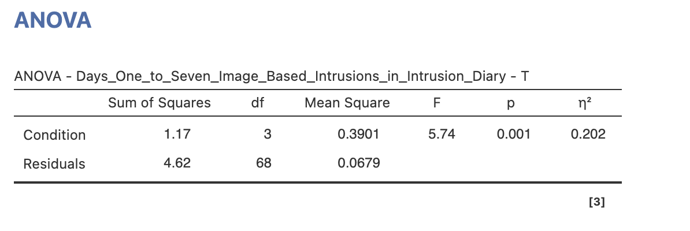
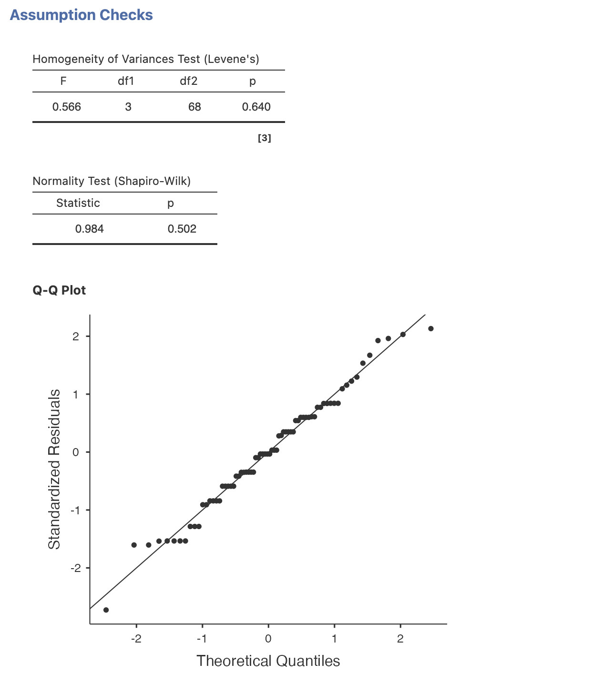
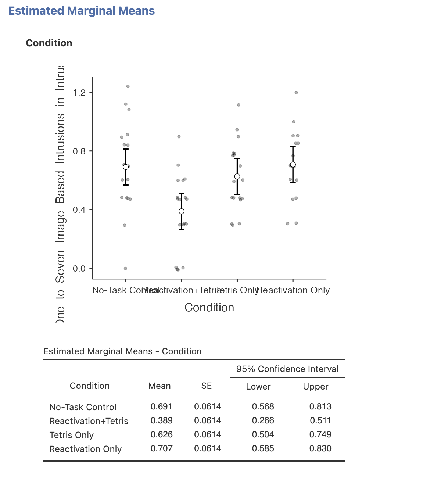
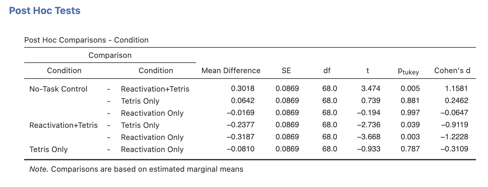
8. Summary
ANOVA is a flexible and powerful method for comparing the means of more than two groups whilst accounting for the exploding number of multiple comparisons we get from more complex experimental designs. ANOVA takes a bit more work to run, check and interpret than a t-test but the results from a single ANOVA analysis contain a huge amount of critical information about our data!